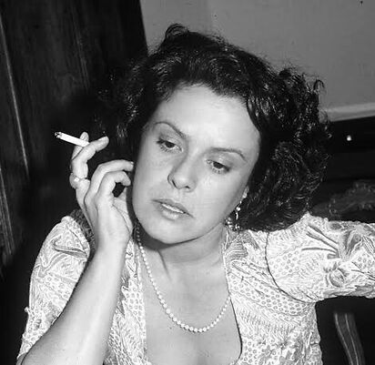
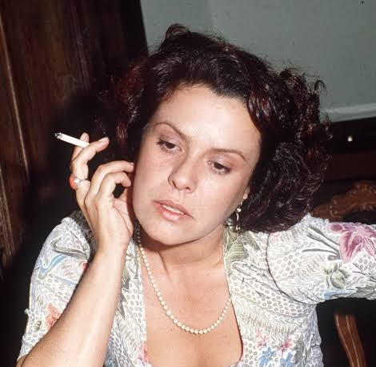
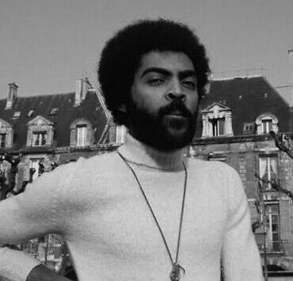
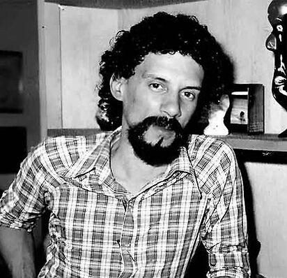

Chico Buarque: Um dos maiores letristas e contadores de histórias da MPB, famoso por sua poesia sofisticada e crônicas do cotidiano, sempre com um olhar atento e crítico às questões sociais e humanas do Brasil.
Apesar de Você: Lançada em 1970 com um ritmo animado e contagiante de samba, é uma resposta direta e afrontosa ao regime ditatorial. A letra foi brilhantemente construída com duplos sentidos para passar pela censura inicial disfarçada como uma simples briga de namorados.
Geraldo Vandré: Compositor de forte viés político e figura central da era de ouro dos grandes festivais de música na televisão brasileira durante os anos 1960.
Pra Não Dizer Que Não Falei das Flores: Também conhecida como "Caminhando", esta marcha de 1968 tornou-se o hino definitivo da resistência no Brasil. A letra convoca a população à ação direta e coletiva com os versos memoráveis "vem, vamos embora, que esperar não é saber".
Caetano Veloso: Intelectual, provocador e um dos principais criadores do movimento Tropicália, reconhecido por sua constante busca por romper fronteiras estéticas e comportamentais na música nacional.
Alegria, Alegria: Apresentada no festival de 1967, chocou a elite musical purista ao introduzir guitarras elétricas na MPB. Funciona como uma colagem cinematográfica de imagens da cultura pop, do jornalismo e da juventude urbana em defesa da liberdade.


Elis Regina: Aclamada como uma das maiores intérpretes vocais da história do país, inesquecível por sua técnica impecável, expressividade dramática e entrega emocional visceral no palco.
O Bêbado e a Equilibrista: Composta por João Bosco e Aldir Blanc, imortalizou-se na voz de Elis em 1979. A canção tornou-se o hino oficial da Lei da Anistia, homenageando de forma poética e comovente os exilados políticos que começavam a retornar ao Brasil.


Gilberto Gil: Ícone tropicalista que funde com maestria ritmos regionais nordestinos, rock, reggae e elementos globais, guiado por uma visão poética, mística e filosófica muito singular.
Cálice: Escrita em parceria com Chico Buarque, a canção driblou os censores através de um engenhoso jogo fonético. O som da palavra "cálice" (o copo de vinho da missa) soa de forma idêntica à ordem "cale-se", denunciando a censura e as torturas nos porões do regime.
Ney Matogrosso: Um performer revolucionário, dono de uma voz de contratenor rara e de uma presença de palco andrógina, teatral e provocativa que quebrou inúmeros tabus na sociedade brasileira.
Sangue Latino: Lançada em 1973 como o grande sucesso do grupo Secos & Molhados, a faixa é um lamento profundo e um grito de resiliência sobre a identidade mestiça e as dificuldades históricas enfrentadas pelos povos da América Latina.


Gonzaguinha: Compositor intenso, autêntico e passional. No início de sua carreira, foi frequentemente rotulado como "cantor rancor" por suas letras duras que não amenizavam a crua realidade social.
Comportamento Geral: Lançada em 1973, é uma crítica afiada, rítmica e ácida à docilidade, submissão e conformismo cego que o sistema e o autoritarismo exigiam da classe trabalhadora frente à exploração diária.
Milton Nascimento: Pilar do lendário Clube da Esquina, reconhecido mundialmente por sua voz transcendental, amplitude vocal impressionante e harmonias musicais ricas e altamente complexas.
Coração de Estudante: Originalmente uma melodia instrumental de Wagner Tiso que posteriormente ganhou letra, a canção embalou a transição para a democracia e o movimento das Diretas Já, simbolizando simultaneamente o luto pelas perdas e a esperança por um novo país.
Raul Seixas: Consagrado como o "pai do rock brasileiro", Raul é célebre por sua postura anárquica e composições que misturam rockabilly, filosofia, misticismo e deboche.
Mosca na Sopa: A faixa mistura riffs de rock clássico com ritmos e percussões de terreiro de umbanda. A mosca zumbindo de forma irritante é usada como uma metáfora perfeita para o incômodo constante que a contracultura e os jovens causavam ao sistema conservador vigente.